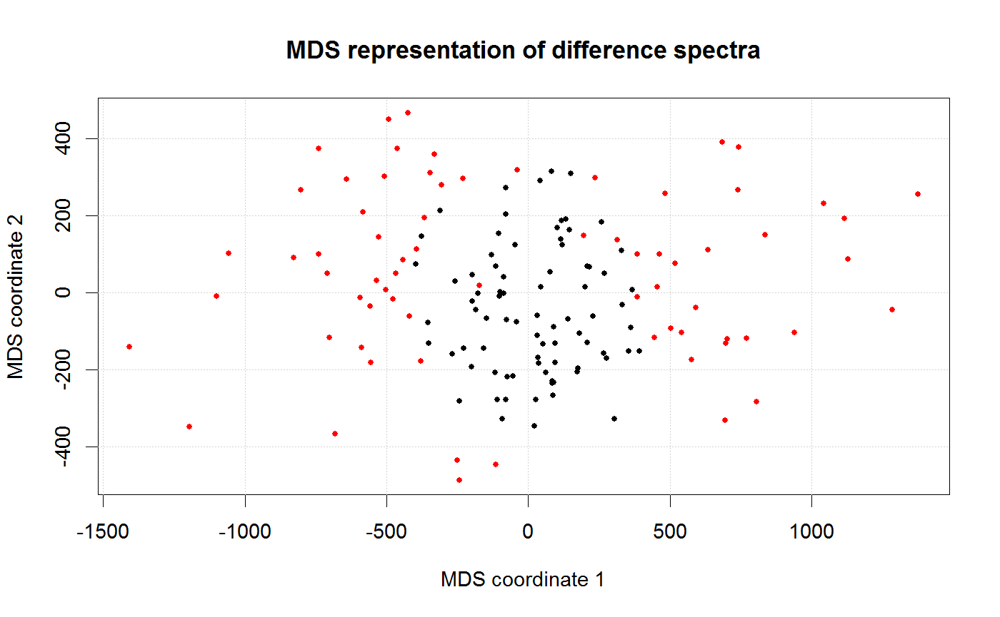

Plot MDS of LOF_obj data
plot_LOF_MDS(obj, type = c("data", "differences", "centers"), LOF_threshold = 10, x = "topright", y = NULL, colors = c("black", "red"), LOF = NULL)
| obj | - either "LOF_obj" object or "hyperspec" object. |
|---|---|
| type | - type of plot, string wit one of the following: "data", "differences", "centers". May be abbreviated. |
| LOF_threshold | - LOF threshold values. Rows (lines) that have threshold above |
| x, y | position of legend. See |
| colors | Colors names for LOF below and above threshold default are: |
| LOF | - vector of lack-of-fit values for every row; |
Other LOF_obj: get_LOF_by_class,
plot_LOF_hist, plot_LOF_sp,
plot_stacked
plot_LOF_MDS(obj, "differences", x = NULL)plot_LOF_MDS(obj, "centers", x = NULL)